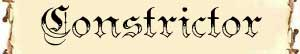
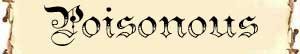
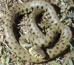
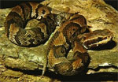
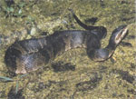
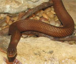
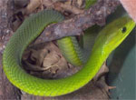
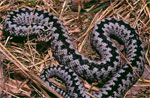

Spire del Serpente;

|
|
Ambiente/Habitat | Variabile |
| Frequenza | Uncommon | |
| Organizzazione | Solitario | |
| Periodo di Attività | Qualsiasi | |
| Dieta | Carnivore | |
| Intelligenza | Animal (1) | |
| Punti Combattimento | Nessuno | |
| Tesoro | Nessuno | |
| Allineamento Dominante | Neutrale | |
| Numero di Apparizione | 1 | |
| Classe Armatura | [3 DV] 5 [-5 corazza] [4 DV] 4 [-6 corazza] [5 DV] 4 [-6 corazza] | |
| Movimento | 6 esagoni /Nuotare 4 esagoni | |
| Dadi Vita | 1d10: (1-5) 3 (+2 punti ferita) (6-8) 4 (+2 punti ferita) (9-10) 5 (+2 punti ferita) | |
| Thac0 | [3 DV] 17 [4 DV] 16 [5 DV] 15 | |
| Numero di Attacchi | Morso | |
| Danni | [3 DV] 1d4 [4 DV] 1d6 [5 DV] 1d6 | |
| Poteri Offensivi | Istinto Predatorio; Spire del Serpente; |
|
| Poteri Difensivi | Robustezza Superiore (+2 punti ferita); | |
| Poteri Generici | Nessuno | |
| Vulnerabilità | Nessuna | |
| Resistenza alla Magia | Nessuna | |
| Sensi | Vista Comune; Sensi Superiori; | |
| Dimensioni | [3 DV] Medium (2 metri) [4 DV] Large (2,5 metri) [5 DV] Large (3 metri) | |
| Morale | Steady (11) | |
| Valore in Punti Esperienza | [3 DV] 136 [4 DV] 304 [5 DV] 409 |
| MODIFICATORI AI TIRI SALVEZZA [3 DV] | |||||||||||||||||||||||
| COR | 0 | 49 | ENV | 0 | 55 | MAG | 0 | 62 | MAL | 0 | 47 | MEN | 0 | 60 | RIF | 0 | 54 | ROB | 0 | 53 | VEL | 0 | 49 |
| MODIFICATORI AI TIRI SALVEZZA [4 DV] | |||||||||||||||||||||||
| COR | 0 | 49 | ENV | 0 | 54 | MAG | 0 | 62 | MAL | 0 | 47 | MEN | 0 | 60 | RIF | 0 | 56 | ROB | 0 | 51 | VEL | 0 | 44 |
| MODIFICATORI AI TIRI SALVEZZA [5 DV] | |||||||||||||||||||||||
| COR | 0 | 45 | ENV | 0 | 50 | MAG | 0 | 59 | MAL | 0 | 44 | MEN | 0 | 57 | RIF | 0 | 53 | ROB | 0 | 47 | VEL | 0 | 41 |
Descrizione
E' un grande serpente dal corpo sinuoso e massiccio. Grosse e resistenti scaglie ricoprono interamente il corpo di questa creatura. Le sue mandibole sono robuste e presentano due grossi ed aguzzi denti pronti a strappare la carne dell'avversario.
Combat
Lo Snake
Constrictor attacca le proprie vittime in corpo a corpo. Solitamente questa
creatura punta la vittima che appare più vulnerabile e continua ad attaccarla
fino ad averla uccisa.
ISTINTO PREDATORIO
(Moderate Special Ability):
La creatura
possiede un forte istinto predatorio, per tale motivo costei riceve un
bonus costante di
+1
ai suoi tiri per colpire.
SPIRE DEL SERPENTE INFERIORI
(Moderate Special Ability):
Se il serpente
colpisce con il morso una creatura di taglia non superiore alla propria, si avvolge attorno
alla stessa stritolandola. La vittima, quindi, subirà alla fine del round in
corso e di quelli successivi i relativi danni da stritolamento automaticamente
(senza che sia richiesto alcun tiro per colpire). Chi è stritolato può compiere
azioni ma è considerato a tutti gli effetti incapacitato e non può spostarsi
dalla posizione occupata. Mentre effettua la stretta il serpente può comunque
continuare ad attaccare l'avversario con il suo morso (necessitando ovviamente
di un tiro per colpire). Se chi è stritolato desidera liberarsi, costui può
effettuare un'azione che impegna un intero round (facendo accumulare 1 punto
fatica) al termine del quale potrà effettuare un tiro salvezza su robustezza
modificato dalla forza in luogo della costituzione. Al tiro salvezza sarà applicato il
modificatore previsto dal serpente ed un'ulteriore penalità cumulativa di -3% per
ogni soglia di affaticamento raggiunto. Se il tiro salvezza fallisce, la vittima resterà stritolata subendo i relativi danni previsti;
se riesce, la vittima si libererà e non subirà i danni da stritolamento alla
fine del round. Ogni creatura che aiuti la vittima a liberarsi conferisce un
bonus pari al +10%,
costoro devono impiegare l'intero round, avere entrambe le mani libere ed
accumulare 1 punto fatica. Chi attacca il serpente in corpo a corpo ha il 30% di
possibilità di dirigere il proprio attacco contro la vittima, utilizzando 3
punti combattimento questa percentuale scende al 15% e l'attaccante si
considererà aver utilizzato nel round un colpo speciale di combattimento. Chi
attacca il serpente con armi da lancio o da tiro dovrà seguire le normali regole
del random shot ma la creatura stritolata si considererà di una taglia
superiore. Effetti e magie ad area che colpiscono la posizione occupata dal
serpente o quella occupata dalla vittima avranno effetto su ambedue le creature
(anche se lanciati precedentemente allo stritolamento).
ROBUSTEZZA SUPERIORE (Typical Ability): Il fisico di questa creatura è estremamente robusto conferendole una robustezza superiore che le garantisce 2 punti ferita supplementari.
LESSER COMBO - ISTINTO PREDATORIO e SPIRE DEL SERPENTE INFERIORI - Le due abilità costituiscono una combo in quanto la prima incide sulle possibilità di utilizzo della seconda. In considerazione dell'incidenza tutto sommato modesta la combo può considerarsi minore.
Habitat/Society
Esistono diversi tipi di Snake Constrictor. A seconda della tipologia di serpente varia l'habitat dello stesso. Si tratta in ogni caso di creature solitarie che si incontrano con altri esseri dello stesso tipo unicamente per finalità riproduttive. La lista di queste creature è indicata nella seguente tabella:
| Tipologia | Climate/Terrain |
Danno da Stritolamento al round |
Modificatore tiro salvezza per liberarsi | Note |
| ANACONDA | Paludi ed Acquitrini |
[3 DV] 1d6 danni
/round [4-5 DV] 1d8 danni /round |
[3 DV] bonus +5% [4-5 DV] nessuno |
Nessuna |
| ANACONDA NERA | Paludi ed Acquitrini |
[3 DV] 1d6 danni
/round [4-5 DV] 1d8 danni /round |
[3 DV] nessuno [4-5 DV] malus -5% |
Nessuna |
| BOA DI PALUDE | Paludi ed Acquitrini |
[3 DV] 1d4 danni
/round [4-5 DV] 1d6 danni /round |
[3 DV] nessuno [4-5 DV] malus -5% |
Nessuna |
| ELAPHE PREDATRICE | Foreste |
[3 DV] 1d3 danni
/round [4-5 DV] 1d4 danni /round |
[3 DV] bonus +10% [4-5 DV] bonus +5% |
Nessuna |
| BOA SMERALDO | Foreste |
[3 DV] 1d4 danni
/round [4-5 DV] 1d6 danni /round |
[3 DV] nessuno [4-5 DV] nessuno |
Nessuna |
| PITONE DELLE FOGLIE | Foreste |
[3 DV] 1d4 danni
/round [4-5 DV] 1d6 danni /round |
[3 DV] bonus +10% [4-5 DV] bonus +5% |
Nessuna |
| PITONE RETICOLATO | Foreste |
[3 DV] 1d6 danni
/round [4-5 DV] 1d8 danni /round |
[3 DV] bonus +5% [4-5 DV] nessuno |
Nessuna |
Ecology
La pelle di questi serpenti è molto ricercata e le stesse creature se catturate vive possono essere vendute presso gli adoratori del Culto del Serpente che le ritengono di origini sacre.

|
|
Ambiente/Habitat | Variabile |
| Frequenza | Uncommon | |
| Organizzazione | Solitario | |
| Periodo di Attività | Qualsiasi | |
| Dieta | Carnivore | |
| Intelligenza | Animal (1) | |
| Punti Combattimento | Nessuno | |
| Tesoro | Nessuno | |
| Allineamento Dominante | Neutrale | |
| Numero di Apparizione | 1 | |
| Classe Armatura | 5 [-4 corazza, 1 destrezza] | |
| Movimento | 6 esagoni /Nuotare 4 esagoni | |
| Dadi Vita | 1d10: (1-7) 2 (8-10) 3 | |
| Thac0 | [2 DV] 18 [ DV] 17 | |
| Numero di Attacchi | Morso | |
| Danni | [2 DV] 1d3 [3 DV] 1d4 | |
| Poteri Offensivi | Istinto Predatorio; Veleno; |
|
| Poteri Difensivi | Nessuno | |
| Poteri Generici | Nessuno | |
| Vulnerabilità | Nessuna | |
| Resistenza alla Magia | Nessuna | |
| Sensi | Vista Comune; Sensi Superiori; | |
| Dimensioni | [2 DV] Medium (1,20 metri) [3 DV] Medium (1,60 metri) | |
| Morale | Average (10) | |
| Valore in Punti Esperienza | Variabile |
| MODIFICATORI AI TIRI SALVEZZA [2 DV] | |||||||||||||||||||||||
| COR | 0 | 52 | ENV | 0 | 58 | MAG | 0 | 65 | MAL | 0 | 51 | MEN | 0 | 63 | RIF | 0 | 57 | ROB | 0 | 56 | VEL | 0 | 53 |
| MODIFICATORI AI TIRI SALVEZZA [3 DV] | |||||||||||||||||||||||
| COR | 0 | 49 | ENV | 0 | 55 | MAG | 0 | 62 | MAL | 0 | 47 | MEN | 0 | 60 | RIF | 0 | 54 | ROB | 0 | 53 | VEL | 0 | 49 |
Descrizione
E' un serpente dal corpo sinuoso e dai movimenti rapidi. Scaglie ricoprono interamente il corpo di questa creatura. Dalle sue mandibole spuntano due grossi ed aguzzi denti dai quali gocciola visibilmente un liquido venefico.
Combat
Lo Snake
Poisonous attacca le proprie vittime in corpo a corpo avvelenandole con il
proprio morso. Se circondato od attaccato da più creature il serpente morderà
più creature possibili per cercare di avvelenarle tutte.
ISTINTO PREDATORIO
(Lesser Special Ability):
La creatura possiede un forte
istinto predatorio, per tale motivo costei riceve un
bonus costante di +1 alla Thac0
con i suoi attacchi.
VELENO
(Variabile):
Se la creatura
colpisce con il proprio morso avvelena la
vittima. La potenza, gli effetti e la tipologia del veleno cambiano a seconda
della tipologia di serpente incontrato come indicato nella sottostante tabella.
LESSER COMBO - ISTINTO PREDATORIO e VELENO - Le due abilità costituiscono una combo in quanto la prima incide sulle possibilità di utilizzo della seconda. In considerazione dell'incidenza tutto sommato modesta la combo può considerarsi minore.
Habitat/Society
Esistono diversi tipi di Snake Poisonous. A seconda della tipologia di serpente varia l'habitat dello stesso. Si tratta in ogni caso di creature solitarie che si incontrano con altri esseri dello stesso tipo unicamente per finalità riproduttive. La lista di queste creature è indicata nella seguente tabella:
| Tipologia | Climate/Terrain | Tipologia di Veleno | Note |
| BISCIA DI
PALUDE  |
Paludi ed Acquitrini | (Least Special Ability) Veleno: Tipo Insinuativo, Onset 1d2 round, Effetto 0/4, Delay 2, Mod. TS +5%, Ass. None |
XP
value
[2 DV] 72
[3 DV]
109 Mystical Resource Sourge Presenza 4% |
| MOCASSINO
MACULATO  |
Paludi ed Acquitrini | (Moderate Special Ability) Veleno: Tipo Insinuativo, Onset 1 round, Effetto 0/12, Delay 3, Mod. TS -5%, Ass. None |
XP
value
[2 DV] 94
[3 DV]
135 Mystical Resource Sourge Presenza 13% |
| MOCASSINO
NERO  |
Paludi ed Acquitrini | (Moderate Special Ability) Veleno: Tipo Insinuativo, Onset 1 round, Effetto 0/8, Delay 2, Mod. TS -5%, Ass. None |
XP
value
[2 DV] 94
[3 DV]
135 Mystical Resource Sourge Presenza 10% |
| SERPE DELLA
MANGROVIE  |
Paludi ed Acquitrini | (Lesser Special Ability) Veleno: Tipo Insinuativo, Onset 1d2 round, Effetto 0/9, Delay 3, Mod. TS 0, Ass. None |
XP
value
[2 DV] 81
[3 DV]
119 Mystical Resource Sourge Presenza 7% |
| MAMBA VERDE  |
Paludi ed Acquitrini | (Moderate Special Ability) Veleno: Tipo Insinuativo, Onset 1d2 round, Effetto 2/8, Delay 2, Mod. TS 0, Ass. None |
XP
value
[2 DV] 94
[3 DV]
135 Mystical Resource Sourge Presenza 9% |
| SERPE NERA
DELLE PALUDI |
Paludi ed Acquitrini | (Lesser Special Ability) Veleno: Tipo Insinuativo, Onset 1 round, Effetto 0/Incapacitato per 10 round, Delay None, Mod. TS 0, Ass. 10 round |
XP
value
[2 DV] 81
[3 DV]
119 Mystical Resource Sourge Presenza 7% |
| VIPERA
COMUNE  |
Foreste Temperate | (Moderate Special Ability) Veleno: Tipo Insinuativo, Onset 1d3 round, Effetto 0/15, Delay 3, Mod. TS 0, Ass. None |
XP
value
[2 DV] 94
[3 DV]
135 Mystical Resource Sourge Presenza 10% |
Ecology
La pelle di questi serpenti è molto ricercata e le stesse creature se catturate vive possono essere vendute presso gli adoratori del Culto del Serpente che le ritengono di origini sacre.
Mystical Resource Sourge (Ghiandola Venefica) Quantità: 1, Presenza Variabile - Effetto Particolare: Veleno - Qualità della Risorsa: Common.